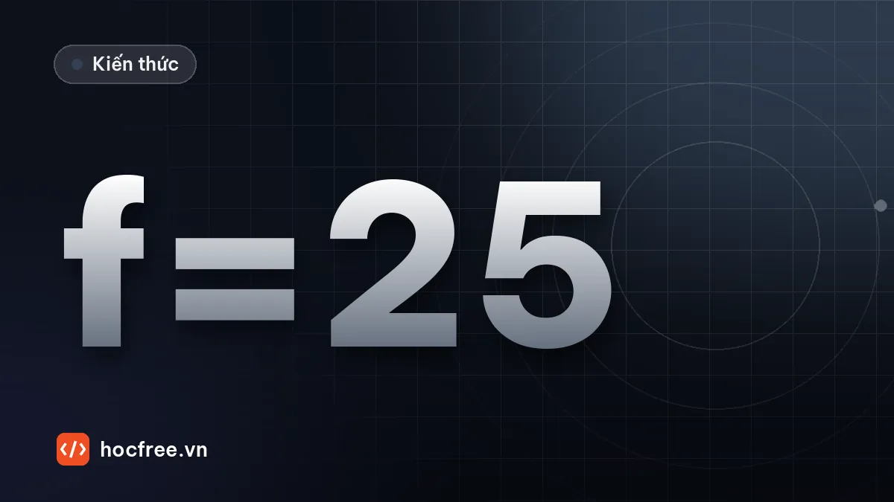

Chọn camera và ống kính Machine Vision: độ phân giải, FOV, tiêu cự
Từ dung sai và lỗi nhỏ nhất ra số pixel, tiêu cự từ FOV và khoảng làm việc, ngàm, kích thước cảm biến và độ phân giải ống kính.

Học xong bài này, bạn sẽ
- Tính độ phân giải cần thiết từ dung sai
- Tính tiêu cự từ FOV và khoảng làm việc
- Chọn ngàm và kích thước cảm biến phù hợp
Nên học trước: Global/rolling shutter, area/line scan
Nội dung bài viết
- 1. Bước 1: từ bài toán ra trường nhìn (FOV)
- 2. Bước 2: kích thước pixel trên vật từ dung sai hoặc lỗi nhỏ nhất
- 3. Bước 3: kích thước cảm biến và ngàm ống kính
- 4. Bước 4: tiêu cự từ FOV và khoảng làm việc
- 5. Bước 5: ống kính có đủ nét cho pixel không?
- 6. Những thông số hay bị bỏ quên
- 7. Script chọn cấu hình hoàn chỉnh
- 8. Sai lầm thường gặp
- 9. Bài tập
- Tóm tắt
Một hệ thống Machine Vision thất bại thường không phải vì thuật toán mà vì chọn sai phần cứng ngay từ đầu: camera không đủ pixel cho dung sai cần đo, ống kính không phủ được trường nhìn ở khoảng cách lắp đặt, ống kính không đủ nét cho pixel nhỏ, hoặc không lắp vừa ngàm camera. Bài trước, "Global/rolling shutter, area/line scan", đã chọn kiểu camera và dạy đọc datasheet cảm biến. Bài này đi tiếp quy trình bằng con số: từ dung sai và lỗi nhỏ nhất ra kích thước pixel trên vật, từ FOV và khoảng làm việc ra tiêu cự, rồi kiểm tra ngàm, kích thước cảm biến và độ phân giải ống kính. Bài sau, "Độ sâu trường ảnh, khẩu độ, lấy nét", hoàn thiện phần ống kính với khẩu độ và độ sâu trường ảnh.
1. Bước 1: từ bài toán ra trường nhìn (FOV)
Ghi bốn nhóm thông tin trước khi mở catalog camera:
- Vùng cần nhìn: cả chi tiết hay chỉ vùng chứa đặc trưng cần đo/kiểm tra (camera đo không bắt buộc nhìn cả chi tiết).
- Sai lệch vị trí khi chụp: dọc và ngang băng tải, do trigger, đồ gá, thanh dẫn hướng.
- Yêu cầu chi tiết nhỏ nhất: dung sai cần đo, hoặc kích thước lỗi nhỏ nhất cần phát hiện (theo chiều hẹp nhất: bề rộng vết xước, không phải chiều dài).
- Khoảng làm việc (WD): khoảng trống cơ khí từ ống kính tới vật, và chỗ cho đèn.
FOV (mỗi chiều) = vùng cần nhìn + 2 × sai lệch vị trí + 2 × biên an toàn
Ví dụ: chi tiết 80 × 60 mm, sai lệch ±5 mm mỗi chiều, biên 2 mm mỗi phía
FOV = (80 + 10 + 4) × (60 + 10 + 4) = 94 × 74 mmKiểm tra cả hai chiều, vì tỉ lệ khung của cảm biến (4:3, 5:4, 1:1, 16:9…) hiếm khi khớp với tỉ lệ FOV. Đồ gá tốt hơn (giảm sai lệch vị trí) làm FOV nhỏ lại, và đó thường là cách rẻ nhất để có pixel nhỏ hơn trên vật.
2. Bước 2: kích thước pixel trên vật từ dung sai hoặc lỗi nhỏ nhất
Kích thước pixel trên vật p_vật = FOV / số pixel là con số trung tâm của cả bài. Ba quy tắc kinh nghiệm phổ biến (điểm xuất phát, phải được xác nhận bằng chụp thử):
| Bài toán | Quy tắc | Ghi chú |
|---|---|---|
| Phát hiện lỗi, có/không | Lỗi nhỏ nhất phủ ≥ 3–5 pixel → p ≤ lỗi / 4 | Theo chiều hẹp nhất của lỗi; tương phản kém thì cần nhiều pixel hơn |
| Đo kích thước, quy tắc thận trọng | Dải dung sai phủ ≥ 10 pixel → p ≤ (2 × dung sai) / 10 | Không dựa vào subpixel; dùng trong bài tập cuối chặng 6 |
| Đo kích thước, dựa vào subpixel | Độ lặp lại 6σ của phép đo ≤ 20% dải dung sai, với σ cạnh giả định ≈ 0,1 pixel | Chỉ dùng khi chứng minh được bằng thử độ lặp lại (bài "Đặc tả kỹ thuật và nghiệm thu FAT/SAT", chặng 7 và 8) |
Quy tắc thứ ba cần giải thích: thuật toán tìm cạnh subpixel (chặng 7) với ảnh đèn nền tốt có thể định vị một cạnh với độ lệch chuẩn cỡ 0,05–0,1 pixel. Một kích thước là hiệu của hai cạnh, nên σ_kích_thước ≈ √2 · σ_cạnh · p. Yêu cầu 6 · σ_kích_thước ≤ 20% × dải dung sai cho p ≤ 0,2 × dải / (6 · √2 · 0,1). Con số 0,1 pixel là giả định lạc quan nhưng phổ biến; ảnh nhiễu, cạnh mờ, bề mặt phản xạ làm nó tệ đi nhiều lần. Áp dụng cho bài thực hành của trang (đo chi tiết 80 × 60 mm, dung sai ±0,05 mm):
import math
dai_dung_sai = 2 * 0.05 # mm: ±0,05 mm → dải 0,1 mm
CAM_BIEN = [ # (tên, ngang, dọc, pixel µm) — các cỡ global shutter phổ biến, số liệu làm tròn
("5 MP", 2448, 2048, 3.45), ("12 MP", 4096, 3000, 3.45),
("24,5 MP", 5328, 4608, 2.74), ("65 MP", 9344, 7000, 3.2),
]
QUY_TAC = {
"thận trọng (10 px/dải)": dai_dung_sai / 10,
"subpixel (σ cạnh 0,1 px)": 0.2 * dai_dung_sai / (6 * math.sqrt(2) * 0.1),
}
for lech in (5.0, 1.0): # sai lệch vị trí ± (mm): đồ gá thường / đồ gá tốt
fx, fy = 80 + 2 * lech + 4, 60 + 2 * lech + 4
print(f"Sai lệch ±{lech:.0f} mm → FOV {fx:.0f} × {fy:.0f} mm")
for ten_qt, p_max in QUY_TAC.items():
nx, ny = math.ceil(fx / p_max), math.ceil(fy / p_max)
chon = next((c for c in CAM_BIEN if max(fx / c[1], fy / c[2]) <= p_max), None)
ket_qua = "không cỡ nào trong danh mục đủ" if chon is None else \
f"chọn {chon[0]}, pixel trên vật {max(fx / chon[1], fy / chon[2]) * 1000:.1f} µm"
print(f" {ten_qt:25s}: p ≤ {p_max * 1000:4.1f} µm → cần {nx} × {ny} px"
f" ({nx * ny / 1e6:4.1f} MP) → {ket_qua}")Sai lệch ±5 mm → FOV 94 × 74 mm
thận trọng (10 px/dải) : p ≤ 10.0 µm → cần 9400 × 7400 px (69.6 MP) → không cỡ nào trong danh mục đủ
subpixel (σ cạnh 0,1 px) : p ≤ 23.6 µm → cần 3989 × 3140 px (12.5 MP) → chọn 24,5 MP, pixel trên vật 17.6 µm
Sai lệch ±1 mm → FOV 86 × 66 mm
thận trọng (10 px/dải) : p ≤ 10.0 µm → cần 8600 × 6600 px (56.8 MP) → chọn 65 MP, pixel trên vật 9.4 µm
subpixel (σ cạnh 0,1 px) : p ≤ 23.6 µm → cần 3649 × 2801 px (10.2 MP) → chọn 12 MP, pixel trên vật 22.0 µmKết quả này là bài học quan trọng nhất về độ phân giải:
- Theo quy tắc thận trọng, đo dung sai ±0,05 mm trên FOV gần 100 mm cần pixel 10 µm trên vật, khoảng 70 MP: cảm biến cỡ đó đắt, chậm, cần ống kính khổ lớn và còn vướng sai số phối cảnh (mục 6). Dung sai chặt trên vùng rộng là bài toán khó bản chất, không phải do chọn sai camera.
- Theo quy tắc subpixel, cần khoảng 23,6 µm/pixel: cảm biến 24,5 MP đạt với đồ gá thường, và chỉ cần 12 MP nếu đồ gá giữ chi tiết trong ±1 mm (khi đó quy tắc thận trọng cũng chỉ cần cỡ 65 MP thay vì 70 MP: đồ gá tốt luôn có lợi). Đổi lại, bạn phải chứng minh độ lặp lại bằng thử nghiệm trước khi cam kết.
- Các lối ra khác khi một camera không đủ: dùng hai camera, mỗi camera nhìn một cặp cạnh với FOV nhỏ (hiệu chuẩn chung để đo khoảng cách giữa chúng); hoặc chỉ đo những kích thước thật sự có dung sai chặt.
3. Bước 3: kích thước cảm biến và ngàm ống kính
Kích thước cảm biến luôn tính từ số pixel × kích thước pixel. Tên định dạng "inch" chỉ là nhãn để chọn ống kính có vòng ảnh (image circle) đủ lớn: đường kính vòng ảnh của ống kính phải ≥ đường chéo cảm biến, nếu không ảnh bị tối góc (vignetting) và mờ ở rìa.
| Cảm biến ví dụ | Kích thước (mm) | Đường chéo | Định dạng gọi là |
|---|---|---|---|
| 1440 × 1080, 3,45 µm (1,6 MP) | 4,97 × 3,73 | 6,2 mm | 1/2.9" |
| 2448 × 2048, 3,45 µm (5 MP) | 8,45 × 7,07 | 11,0 mm | 2/3" |
| 4096 × 3000, 3,45 µm (12 MP) | 14,13 × 10,35 | 17,5 mm | 1.1" |
| 5328 × 4608, 2,74 µm (24,5 MP) | 14,60 × 12,63 | 19,3 mm | 1.2" |
| Khổ APS-C, full-frame (36 × 24 mm) | khoảng 23 × 15 đến 36 × 24 | khoảng 28–43 mm | APS-C, 35 mm |
Ngàm (mount) quyết định ống kính có lắp vừa và lấy nét được không. Hai thông số: kiểu ren/bayonet, và khoảng cách mặt bích (flange focal distance: từ mặt tựa của ngàm tới mặt cảm biến). Ống kính chỉ lấy nét đúng khi khoảng cách này khớp với camera.
| Ngàm | Kiểu | Khoảng cách mặt bích | Dùng cho |
|---|---|---|---|
| C-mount | Ren 1"-32 UN (đường kính 25,4 mm) | 17,526 mm | Phổ biến nhất trong Machine Vision, cảm biến tới khoảng 1.1" |
| CS-mount | Cùng ren với C | 12,526 mm | Camera nhỏ, giám sát. Ống kính C lắp lên camera CS bằng vòng đệm 5 mm; ống kính CS không dùng được trên camera C (không lấy nét được) |
| S-mount (M12) | Ren M12 × 0,5 | Không chuẩn hóa | Camera bo mạch, cảm biến nhỏ, ống kính rẻ và nhỏ |
| TFL / TFL-II | Ren M35 × 0,75 / M48 × 0,75 | 17,526 mm (như C) | Chuẩn JIIA cho cảm biến lớn hơn C-mount: TFL cho cỡ APS-C, TFL-II cho cỡ APS-H |
| M42 × 1 | Ren M42 × 1 | Không thống nhất giữa các hãng | Cảm biến lớn, line scan 4k–8k. Phải đối chiếu datasheet camera và ống kính, thường cần vòng nối đúng độ dày |
| F-mount (Nikon F) | Bayonet | 46,5 mm | Cảm biến lớn, line scan; tận dụng ống kính máy ảnh khổ 35 mm |
| M58, M72… | Ren lớn | Tùy hãng | Line scan dài (8k–16k), cảm biến rất lớn |
4. Bước 4: tiêu cự từ FOV và khoảng làm việc
Độ phóng đại m = kích thước ảnh trên cảm biến / kích thước vật. Chọn theo chiều chặt hơn để FOV phủ đủ cả hai chiều: m = min(rộng cảm biến / FOV ngang, cao cảm biến / FOV dọc). Theo xấp xỉ thấu kính mỏng (khoảng cách vật Z tính tới mặt chính của ống kính):
1/f = 1/Z + 1/Z' (Z: vật → ống kính, Z': ống kính → cảm biến)
m = Z' / Z
→ f = Z · m / (1 + m) → tiêu cự cần cho khoảng cách Z
→ Z = f · (1 + 1/m) → khoảng cách cần với tiêu cự chuẩn f
m = f / (Z − f) → độ phóng đại khi giữ Z và đổi f
Độ dịch ống kính so với khi lấy nét vô cực: Z' − f = f · mTiêu cự chuẩn của ống kính C-mount cố định thường là 4, 6, 8, 12, 16, 25, 35, 50, 75, 100 mm (tùy hãng có thêm 5, 10, 20…). Tính tiêu cự lý thuyết, chọn tiêu cự chuẩn gần nhất, rồi tính lại khoảng cách vật hoặc FOV:
TIEU_CU = [8, 12, 16, 25, 35, 50, 75, 100] # mm, tiêu cự chuẩn phổ biến
rong_cb, cao_cb = 5328 * 2.74e-3, 4608 * 2.74e-3 # cảm biến 24,5 MP (mm)
fx, fy, Z = 94.0, 74.0, 300.0 # FOV cần (mm) và khoảng cách vật mong muốn
m = min(rong_cb / fx, cao_cb / fy)
f_lt = Z * m / (1 + m)
print(f"Cảm biến {rong_cb:.2f} × {cao_cb:.2f} mm; m = min({rong_cb / fx:.4f}, {cao_cb / fy:.4f}) = {m:.4f}")
print(f"Tiêu cự lý thuyết f = {Z:.0f} × {m:.4f} / {1 + m:.4f} = {f_lt:.1f} mm")
for f in sorted(TIEU_CU, key=lambda t: abs(t - f_lt))[:2]:
Z_moi = f * (1 + 1 / m) # cách 1: dời camera để giữ FOV
m_Z = f / (Z - f) # cách 2: giữ Z = 300 mm, FOV đổi
print(f"f = {f} mm:")
print(f" giữ FOV {fx:.0f} × {fy:.0f}: đặt Z ≈ {Z_moi:.0f} mm, ống kính dịch ra {f * m:.1f} mm so với vô cực,"
f" pixel trên vật {2.74 / m:.1f} µm")
print(f" giữ Z = {Z:.0f} mm: m = {m_Z:.4f}, FOV {rong_cb / m_Z:.1f} × {cao_cb / m_Z:.1f} mm,"
f" pixel trên vật {2.74 / m_Z:.1f} µm {'(FOV quá nhỏ!)' if rong_cb / m_Z < fx or cao_cb / m_Z < fy else ''}")Cảm biến 14.60 × 12.63 mm; m = min(0.1553, 0.1706) = 0.1553
Tiêu cự lý thuyết f = 300 × 0.1553 / 1.1553 = 40.3 mm
f = 35 mm:
giữ FOV 94 × 74: đặt Z ≈ 260 mm, ống kính dịch ra 5.4 mm so với vô cực, pixel trên vật 17.6 µm
giữ Z = 300 mm: m = 0.1321, FOV 110.5 × 95.6 mm, pixel trên vật 20.7 µm
f = 50 mm:
giữ FOV 94 × 74: đặt Z ≈ 372 mm, ống kính dịch ra 7.8 mm so với vô cực, pixel trên vật 17.6 µm
giữ Z = 300 mm: m = 0.2000, FOV 73.0 × 63.1 mm, pixel trên vật 13.7 µm (FOV quá nhỏ!)- Tiêu cự lý thuyết 40,3 mm không có sẵn. 35 mm là lựa chọn đúng: hoặc đặt camera gần hơn (Z khoảng 260 mm) để giữ đúng FOV và pixel 17,6 µm; hoặc giữ 300 mm, FOV rộng ra 110 × 96 mm và pixel 20,7 µm (vẫn dưới 23,6 µm của quy tắc subpixel, nhưng còn ít dự phòng).
- 50 mm ở 300 mm cho FOV chỉ 73 × 63 mm, không phủ được chi tiết: không bao giờ làm tròn tiêu cự lên mà không tính lại FOV.
- Ống kính phải dịch ra khoảng 5 mm so với vị trí lấy nét vô cực. Kiểm tra khoảng cách lấy nét gần nhất (MOD, minimum object distance) trong datasheet: nếu Z nhỏ hơn MOD, cần vòng nối (extension tube/spacer) đúng độ dày, và chất lượng ảnh có thể giảm vì ống kính không được tối ưu cho khoảng cách đó.
- Thấu kính mỏng chỉ là gần đúng: Z tính tới mặt chính của ống kính, không phải mặt trước. Khoảng làm việc thật (từ mặt trước ống kính tới vật) thường ngắn hơn Z vài chục mm. Luôn kiểm tra bằng công cụ tính của hãng ống kính hoặc chụp thử.
5. Bước 5: ống kính có đủ nét cho pixel không?
Pixel nhỏ chỉ có ích khi ống kính phân giải được chi tiết cỡ đó. Độ phân giải được đo bằng cặp vạch trên milimét (lp/mm: một vạch đen và một vạch trắng). Cảm biến có pixel p chỉ ghi lại được tối đa tần số Nyquist 1 / (2p) lp/mm. Datasheet ống kính cho đường cong MTF (tỉ lệ độ tương phản còn lại theo tần số); ống kính "đủ nét" khi MTF ở tần số Nyquist của cảm biến còn đáng kể trên cả vùng ảnh (nhiều kỹ sư lấy mốc khoảng 30% ở tâm, thấp hơn ở rìa, tùy bài toán). Ngay cả ống kính hoàn hảo cũng bị giới hạn bởi nhiễu xạ ở khẩu độ: MTF lý tưởng của ống kính tròn bị giới hạn nhiễu xạ có công thức chính xác, tần số cắt 1 / (λ · N_w) với N_w = N · (1 + m) là khẩu độ làm việc:
import math
def mtf_nhieu_xa(nu, lam_mm, N_w):
"""MTF của ống kính lý tưởng chỉ bị giới hạn bởi nhiễu xạ (khẩu độ tròn, ánh sáng đơn sắc)."""
nu_c = 1 / (lam_mm * N_w) # tần số cắt (lp/mm)
if nu >= nu_c:
return 0.0
phi = math.acos(nu / nu_c)
return 2 / math.pi * (phi - math.cos(phi) * math.sin(phi))
LAM, m = 550e-6, 0.155 # ánh sáng xanh lá 550 nm (mm), m ở bài thực hành
print("pixel (µm) | Nyquist (lp/mm) | trên vật (lp/mm) | MTF lý tưởng tại Nyquist: f/2.8 f/4 f/5.6 f/8")
for p_um in (5.86, 3.45, 2.74, 2.0):
nyq = 1 / (2 * p_um / 1000)
mtf = [mtf_nhieu_xa(nyq, LAM, N * (1 + m)) for N in (2.8, 4, 5.6, 8)]
print(f"{p_um:10.2f} | {nyq:15.0f} | {nyq * m:16.1f} |" + "".join(f" {v:6.0%}" for v in mtf))pixel (µm) | Nyquist (lp/mm) | trên vật (lp/mm) | MTF lý tưởng tại Nyquist: f/2.8 f/4 f/5.6 f/8
5.86 | 85 | 13.2 | 81% 73% 62% 47%
3.45 | 145 | 22.5 | 68% 54% 37% 16%
2.74 | 182 | 28.3 | 59% 43% 24% 2%
2.00 | 250 | 38.8 | 45% 25% 4% 0%- Đây là giới hạn trên: ống kính thật luôn có MTF thấp hơn đường lý tưởng, nhất là ở rìa ảnh và ở khẩu độ mở lớn (quang sai). Với pixel 2,74 µm ở f/8, ngay cả ống kính hoàn hảo chỉ còn vài phần trăm tương phản ở Nyquist: pixel nhỏ buộc phải dùng khẩu độ mở hơn, kéo theo độ sâu trường ảnh nông hơn (bài sau).
- Cột "trên vật" là độ phân giải quy về vật: với m = 0,155 và pixel 2,74 µm, chi tiết nhỏ nhất ghi lại được cỡ 1/(2 × 28,3) ≈ 0,018 mm, đúng bằng pixel trên vật.
- Thực tế chọn ống kính: ống kính được hãng công bố cho "độ phân giải x MP" hoặc "pixel tới y µm", cho đúng định dạng cảm biến (ví dụ 1.2"), ngàm đúng; xem đường MTF ở tâm và rìa tại khẩu độ dự kiến. Ống kính rẻ trên camera 24 MP thường cho ảnh không nét hơn camera 5 MP với ống kính tốt.
6. Những thông số hay bị bỏ quên
- Sai số phối cảnh: ống kính thường phóng to vật gần, thu nhỏ vật xa. Ở Z = 260 mm, chi tiết 80 mm cao thấp 0,1 mm (vênh, bụi dưới đáy) đổi kích thước đo khoảng 80 × 0,1 / 260 ≈ 0,03 mm, tức 30% dải dung sai 0,1 mm. Bài "Ống kính telecentric: khi nào cần?" dạy cách tính đầy đủ và quyết định có cần ống kính telecentric hay không.
- Méo ảnh (distortion): ống kính tiêu cự ngắn (góc rộng) méo nhiều hơn; đo lường cần hiệu chuẩn méo (chặng Calibration) hoặc chọn ống kính méo thấp.
- Thời gian phơi sáng khi vật chuyển động: pixel trên vật càng nhỏ thì phơi sáng càng ngắn, đã tính ở bài "Đèn strobe và đồng bộ trigger".
- Ống kính zoom: chỉ dùng để thử nghiệm tìm tiêu cự; trong sản xuất dùng tiêu cự cố định có vít khóa vòng nét và khẩu.
- Kính lọc và ren phía trước: kiểm tra đường kính ren lắp kính lọc của ống kính để mua kính lọc bandpass phù hợp với đèn (bài "Màu đèn, kính lọc và phân cực").
7. Script chọn cấu hình hoàn chỉnh
Gom các bước thành một hàm duy nhất, chạy cho hai bài toán: đo kích thước (bài thực hành) và phát hiện lỗi trên nhãn. Danh mục cảm biến, tiêu cự, vòng ảnh ống kính là ví dụ làm tròn; khi làm thật thay bằng catalog của nhà cung cấp:
import math
CAM_BIEN = [ # (tên, ngang, dọc, pixel µm, ngàm)
("1,6 MP", 1440, 1080, 3.45, "C"), ("5 MP", 2448, 2048, 3.45, "C"),
("12 MP", 4096, 3000, 3.45, "C"), ("24,5 MP", 5328, 4608, 2.74, "C hoặc TFL"),
]
ONG_KINH = [8, 12, 16, 25, 35, 50, 75] # tiêu cự chuẩn (mm)
VONG_ANH = {"2/3\"": 11.0, "1\"": 16.0, "1.1\"": 17.6, "1.2\"": 19.6, "APS-C": 28.3} # vòng ảnh (mm), ví dụ
def chon_cau_hinh(ten, vung, lech, bien, Z, dung_sai=None, loi=None):
fx, fy = (v + 2 * lech + 2 * bien for v in vung)
if dung_sai is not None: # đo: quy tắc subpixel σ cạnh 0,1 px
p_max = 0.2 * 2 * dung_sai / (6 * math.sqrt(2) * 0.1)
else: # phát hiện: lỗi phủ ≥ 4 px
p_max = loi / 4
print(f"=== {ten}: FOV {fx:.0f} × {fy:.0f} mm, pixel trên vật ≤ {p_max * 1000:.1f} µm")
for cb_ten, w, h, p, ngam in CAM_BIEN:
rong, cao = w * p / 1000, h * p / 1000
m_max = min(rong / fx, cao / fy) # m lớn nhất mà FOV vẫn phủ đủ
if p / 1000 / m_max > p_max:
continue # cảm biến không đủ pixel
f_lt = Z * m_max / (1 + m_max)
f = max([t for t in ONG_KINH if t <= f_lt], default=None) # làm tròn XUỐNG để FOV không bị hụt
if f is None:
continue
m = f / (Z - f) # giữ khoảng cách Z
if p / 1000 / m > p_max: # làm tròn tiêu cự xuống làm pixel to ra
print(f" {cb_ten}: f lý thuyết {f_lt:.1f} → {f} mm thì pixel {p / m:.1f} µm > {p_max * 1000:.1f}, thử cảm biến lớn hơn")
continue
cheo = math.hypot(rong, cao)
vong = min((d, k) for k, d in VONG_ANH.items() if d >= cheo)
print(f"Cảm biến {cb_ten} ({rong:.2f} × {cao:.2f} mm, chéo {cheo:.1f} mm, ngàm {ngam})")
print(f" f lý thuyết {f_lt:.1f} mm → ống kính {f} mm ở Z = {Z:.0f} mm: FOV {rong / m:.1f} × {cao / m:.1f} mm,"
f" pixel {p / m:.1f} µm (≤ {p_max * 1000:.1f}), ống kính cho cảm biến ≥ {vong[1]}")
print(f" Nyquist cảm biến {1000 / (2 * p):.0f} lp/mm; dịch nét {f * m:.1f} mm so với vô cực")
return
print(" Không cảm biến nào trong danh mục đủ: giảm FOV (đồ gá), chia nhiều camera, hoặc nới yêu cầu")
chon_cau_hinh("Bài thực hành: đo 80 × 60 mm, ±0,05 mm", (80, 60), lech=5, bien=2, Z=300, dung_sai=0.05)
chon_cau_hinh("Kiểm tra nhãn 120 × 80 mm, lỗi 0,5 mm", (120, 80), lech=5, bien=3, Z=400, loi=0.5)
chon_cau_hinh("Đo 30 × 20 mm, ±0,02 mm", (30, 20), lech=1, bien=1, Z=150, dung_sai=0.02)=== Bài thực hành: đo 80 × 60 mm, ±0,05 mm: FOV 94 × 74 mm, pixel trên vật ≤ 23.6 µm
Cảm biến 24,5 MP (14.60 × 12.63 mm, chéo 19.3 mm, ngàm C hoặc TFL)
f lý thuyết 40.3 mm → ống kính 35 mm ở Z = 300 mm: FOV 110.5 × 95.6 mm, pixel 20.7 µm (≤ 23.6), ống kính cho cảm biến ≥ 1.2"
Nyquist cảm biến 182 lp/mm; dịch nét 4.6 mm so với vô cực
=== Kiểm tra nhãn 120 × 80 mm, lỗi 0,5 mm: FOV 136 × 96 mm, pixel trên vật ≤ 125.0 µm
Cảm biến 1,6 MP (4.97 × 3.73 mm, chéo 6.2 mm, ngàm C)
f lý thuyết 14.1 mm → ống kính 12 mm ở Z = 400 mm: FOV 160.6 × 120.5 mm, pixel 111.5 µm (≤ 125.0), ống kính cho cảm biến ≥ 2/3"
Nyquist cảm biến 145 lp/mm; dịch nét 0.4 mm so với vô cực
=== Đo 30 × 20 mm, ±0,02 mm: FOV 34 × 24 mm, pixel trên vật ≤ 9.4 µm
12 MP: f lý thuyết 44.0 → 35 mm thì pixel 11.3 µm > 9.4, thử cảm biến lớn hơn
Cảm biến 24,5 MP (14.60 × 12.63 mm, chéo 19.3 mm, ngàm C hoặc TFL)
f lý thuyết 45.1 mm → ống kính 35 mm ở Z = 150 mm: FOV 48.0 × 41.5 mm, pixel 9.0 µm (≤ 9.4), ống kính cho cảm biến ≥ 1.2"
Nyquist cảm biến 182 lp/mm; dịch nét 10.7 mm so với vô cựcHàm làm tròn tiêu cự xuống và giữ nguyên Z, nên FOV luôn phủ đủ và chỉ cần kiểm tra pixel còn đạt; đây là lựa chọn an toàn khi khoảng cách lắp đặt đã cố định. Ở bài thực hành nó chọn đúng cấu hình đã phân tích ở mục 4: 24,5 MP, ống kính 35 mm ở 300 mm, pixel 20,7 µm. Bài kiểm tra nhãn chỉ cần camera 1,6 MP với ống kính 12 mm ở 400 mm (lỗi 0,5 mm phủ khoảng 4,5 pixel); ống kính cho 2/3" thừa sức phủ cảm biến 1/2.9". Bài đo cuối cùng cho thấy một cái bẫy hay gặp: cảm biến 12 MP đủ pixel trên giấy, nhưng tiêu cự lý thuyết 44 mm phải làm tròn xuống 35 mm, pixel to ra vượt yêu cầu; phải lên 24,5 MP (hoặc dời camera ra xa để dùng được ống kính 50 mm). Ống kính 35 mm ở khoảng cách chỉ 150 mm cần dịch nét hơn 10 mm: gần như chắc chắn phải kiểm tra MOD và dùng vòng nối.
8. Sai lầm thường gặp
- Lấy FOV bằng đúng kích thước chi tiết, quên sai lệch vị trí và biên.
- Chỉ kiểm tra một chiều của cảm biến.
- Chọn số pixel theo "MP càng nhiều càng tốt": tốn băng thông, giảm tốc độ khung, đòi ống kính đắt và khẩu độ mở (DOF nông).
- Làm tròn tiêu cự lên rồi lắp xong mới thấy FOV hụt.
- Mua ống kính cho 2/3" lắp lên cảm biến 1.1": tối góc, mờ rìa.
- Lắp ống kính CS lên camera C, hoặc ống kính M42 của hãng khác mà không kiểm tra khoảng cách mặt bích: không bao giờ lấy nét được.
- Hứa độ chính xác subpixel trước khi thử độ lặp lại trên ảnh thật.
9. Bài tập
Bài 1 (thực hành của bài). Cần đo chi tiết 80 × 60 mm với dung sai ±0,05 mm, khoảng làm việc 300 mm: chọn độ phân giải và tiêu cự. Giả sử sai lệch vị trí ±5 mm, biên 2 mm, dùng cảm biến 24,5 MP (5328 × 4608, 2,74 µm).
Xem đáp án
import math
fx, fy = 80 + 10 + 4, 60 + 10 + 4
p_than_trong = 0.1 / 10
p_subpixel = 0.2 * 0.1 / (6 * math.sqrt(2) * 0.1)
print(f"FOV {fx} × {fy} mm")
print(f"Thận trọng: pixel ≤ {p_than_trong * 1000:.0f} µm → {fx / p_than_trong:.0f} × {fy / p_than_trong:.0f} px")
print(f"Subpixel: pixel ≤ {p_subpixel * 1000:.1f} µm → {fx / p_subpixel:.0f} × {fy / p_subpixel:.0f} px")
rong, cao = 5328 * 2.74e-3, 4608 * 2.74e-3
m = min(rong / fx, cao / fy)
f = 300 * m / (1 + m)
print(f"m = {m:.4f}, f lý thuyết = {f:.1f} mm → chọn 35 mm")
print(f"Giữ FOV: Z = {35 * (1 + 1 / m):.0f} mm; giữ Z = 300 mm: pixel {2.74 * (300 - 35) / 35:.1f} µm")FOV 94 × 74 mm
Thận trọng: pixel ≤ 10 µm → 9400 × 7400 px
Subpixel: pixel ≤ 23.6 µm → 3988 × 3140 px
m = 0.1553, f lý thuyết = 40.3 mm → chọn 35 mm
Giữ FOV: Z = 260 mm; giữ Z = 300 mm: pixel 20.7 µmĐộ phân giải: theo quy tắc thận trọng cần khoảng 9400 × 7400 pixel (70 MP), không thực tế; theo quy tắc subpixel cần khoảng 4000 × 3140 pixel, chọn cảm biến 24,5 MP (5328 × 4608) để có dự phòng, mono, global shutter. Tiêu cự: lý thuyết 40,3 mm, chọn ống kính 35 mm cho cảm biến 1.2"; đặt Z khoảng 260 mm để pixel 17,6 µm, hoặc giữ 300 mm với pixel 20,7 µm. Kèm hai điều kiện: thử độ lặp lại chứng minh 6σ ≤ 0,02 mm, và đánh giá sai số phối cảnh (cân nhắc telecentric) nếu chi tiết không nằm phẳng tuyệt đối.
Bài 2. Kiểm tra vết bẩn từ 0,3 mm trên nắp hộp 60 × 60 mm, sai lệch vị trí ±3 mm, biên 2 mm, khoảng làm việc tối đa 250 mm. Camera 5 MP (2448 × 2048, 3,45 µm) có đủ không? Chọn tiêu cự.
Xem đáp án
fx = fy = 60 + 6 + 4
p_max = 0.3 / 4
rong, cao = 2448 * 3.45e-3, 2048 * 3.45e-3
m = min(rong / fx, cao / fy)
print(f"FOV {fx} × {fy} mm, pixel ≤ {p_max * 1000:.0f} µm; với 5 MP: pixel {3.45 / m:.1f} µm")
f_lt = 250 * m / (1 + m)
print(f"f lý thuyết ở Z = 250 mm: {f_lt:.1f} mm")
for f in (16, 25):
Z = f * (1 + 1 / m)
print(f"f = {f} mm: giữ FOV {fx} mm cần Z = {Z:.0f} mm {'(vượt 250 mm, không lắp được)' if Z > 250 else '(lắp được)'}")
m16 = 16 / (250 - 16)
print(f"f = 16 mm đặt ở Z = 250 mm: FOV {rong / m16:.1f} × {cao / m16:.1f} mm, pixel {3.45 / m16:.1f} µm")FOV 70 × 70 mm, pixel ≤ 75 µm; với 5 MP: pixel 34.2 µm
f lý thuyết ở Z = 250 mm: 22.9 mm
f = 16 mm: giữ FOV 70 mm cần Z = 175 mm (lắp được)
f = 25 mm: giữ FOV 70 mm cần Z = 273 mm (vượt 250 mm, không lắp được)
f = 16 mm đặt ở Z = 250 mm: FOV 123.5 × 103.3 mm, pixel 50.5 µmCamera 5 MP dư: pixel khoảng 34 µm, cần ≤ 75 µm (thậm chí camera 1,6 MP cũng đạt: 70 mm / 1080 ≈ 65 µm). Tiêu cự lý thuyết ở 250 mm là 22,9 mm. Ống kính 25 mm cần đặt ở 272 mm để giữ FOV, vượt khoảng 250 mm cho phép, nên chọn 16 mm: đặt camera ở khoảng 175 mm thì FOV đúng 70 mm, pixel 34 µm (vết bẩn phủ gần 9 pixel); nếu vẫn đặt ở 250 mm thì FOV khoảng 124 × 103 mm, pixel khoảng 50 µm (vết bẩn khoảng 6 pixel), vẫn đạt. Ống kính tiêu cự ngắn méo nhiều hơn, nhưng với bài toán phát hiện vết bẩn điều đó không đáng ngại.
Bài 3. Trả lời ngắn: (a) Có thể lắp ống kính C-mount lên camera CS-mount không? Ngược lại thì sao? (b) Ống kính ghi "cho cảm biến 2/3"" lắp lên camera 12 MP (4096 × 3000, 3,45 µm) có vấn đề gì? (c) Hai sản phẩm đều ghi "ngàm M42", có chắc lắp lẫn được không?
Xem đáp án
- (a) C lên CS: được, thêm vòng đệm 5 mm (17,526 − 12,526). CS lên C: không, ống kính cần nằm gần cảm biến hơn 5 mm so với mức camera C cho phép, không lấy nét được.
- (b) Cảm biến 14,13 × 10,35 mm có đường chéo 17,5 mm (1.1"), vòng ảnh của ống kính 2/3" chỉ khoảng 11 mm: tối góc nặng và mờ rìa. Cần ống kính cho 1.1" trở lên.
- (c) Không: M42 chỉ quy định ren, khoảng cách mặt bích khác nhau giữa các hãng. Kiểm tra datasheet cả hai, dùng vòng nối đúng độ dày.
Tóm tắt
- FOV = vùng cần nhìn + 2 × sai lệch vị trí + 2 × biên; kiểm tra cả hai chiều; đồ gá tốt làm FOV nhỏ lại.
- Pixel trên vật: phát hiện lỗi ≤ lỗi/4; đo thận trọng ≤ dải dung sai/10; đo dựa vào subpixel phải chứng minh bằng thử độ lặp lại. Mặc định camera mono.
- m = min(cảm biến/FOV); f = Z·m/(1+m); chọn tiêu cự chuẩn rồi tính lại Z = f(1 + 1/m) hoặc FOV ở Z cố định; kiểm tra MOD và độ dịch nét f·m.
- Kích thước cảm biến = số pixel × pixel; vòng ảnh ống kính ≥ đường chéo cảm biến. Ngàm: C 17,526 mm, CS 12,526 mm, TFL M35 17,526 mm, F 46,5 mm, M42 không thống nhất.
- Ống kính phải phân giải tới Nyquist 1/(2p); pixel nhỏ cần ống kính tốt và khẩu độ mở hơn.
Bài tiếp theo: Độ sâu trường ảnh, khẩu độ, lấy nét, chọn khẩu độ cân bằng giữa ánh sáng, độ sâu trường ảnh và nhiễu xạ, và lấy nét bằng chỉ số độ nét.
Bài tập thực hành
- Cần đo chi tiết 80 x 60 mm với dung sai ±0,05 mm, khoảng làm việc 300 mm: chọn độ phân giải và tiêu cự.
Làm xong bài tập mới chuyển sang bài tiếp theo: tự viết code là cách duy nhất để nhớ lâu.